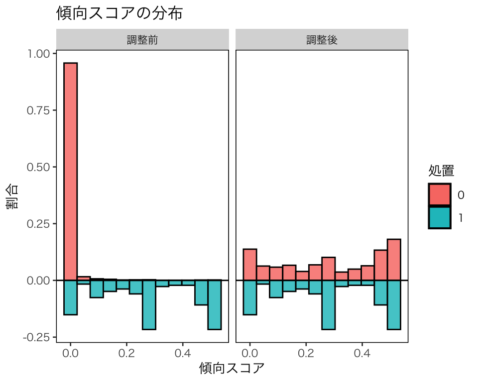

Topic 5 傾向スコア
- トピック5の講義スライド (PDF, 1.4MB)
5.1 準備
5.1.1 予習、講義動画、実習課題
このトピックでやるべきことは、以下のとおりである。
- シラバス(PDFファイル) に記載されているトピック5の予習課題を読む。
- KUTLMS (Moodle) にあるトピック5の講義動画を視聴する。
- この資料の続きを読み、Rを使った実習を行うことで、傾向スコアの使い方を学ぶ。
- 教科書 (安井 2020) 第3章のRを使った分析を自分でやってみる。
- 課題を提出する。
5.1.2 Rパッケージの読み込み
必要なパッケージを読み込み、作図用の日本語フォントを設定する。
pacman::p_load(tidyverse, broom, haven,
WeightIt, cobalt, MatchIt, survey)
theme_set(theme_gray(base_size = 10, base_family = "HiraginoSans-W3")) # macOS用
#theme_set(theme_gray(base_size = 10, base_family = "Meiryo")) # Windows用
#theme_set(theme_gray(base_size = 10, base_family = "IPAGothic")) # Ubuntu用
#showtext::showtext_auto() # Cloud用
#theme_set(theme_gray(base_size = 10, base_family = "noto")) # Cloud用5.1.3 関数の自作
R 4.0.0 より前のバージョンで cobalt パッケージを使おうとすると、「deparse1 という関数がありません」というエラーが出る。そこで、deparse1() を自作しておく。
deparse1() は R 4.0.0 で導入されたので、4.0.0 以降のバージョンを使っている場合、この作業は不要。
5.1.4 このトピックで使うRコードの説明
5.1.4.1 cut()
cut() は連続値をとる変数をもとに、factor 型のカテゴリ変数を作るときに使う。
例として、0から1の間の値をとる変数をカテゴリ変数にしてみよう。
まず、変数をランダムに生成する。
## Min. 1st Qu. Median Mean 3rd Qu. Max.
## 0.0009268 0.2334818 0.4748502 0.4726042 0.7045828 0.9869757この変数を、[0, 0.2], (0.2, 0.4], (0.4, 0.6], (0.6, 0.8], (0.8, 1.0] の5つのカテゴリに分類するカテゴリ変数を作る。
## f1
## [0,0.2] (0.2,0.4] (0.4,0.6] (0.6,0.8] (0.8,1]
## 20 25 21 19 15同様に、[0, 0.2), [0.2, 0.4), [0.4, 0.6), [0.6, 0.8), [0.8, 1.0] の5つのカテゴリにするには、right = FALSE にする。
## f2
## [0,0.2) [0.2,0.4) [0.4,0.6) [0.6,0.8) [0.8,1]
## 20 25 21 19 15各カテゴリに属する観測数を同数にしたいときは、quantile() を利用して次のようにする。
## f3
## [0.000927,0.213] (0.213,0.374] (0.374,0.56] (0.56,0.758]
## 20 20 20 20
## (0.758,0.987]
## 205.2 傾向スコアを用いた因果推論の手順
傾向スコアを使った因果効果の推定は、以下の手順で行う。
- 共変量の選定
- 傾向スコアの推定
- 傾向スコアを用いたバランス調整
- 重み付け
- 層別
- マッチング\(\ast\)（King and Nielsen (2019) によると、傾向スコアを用いたマッチングを因果効果の推定に用いることは推奨されないので、ここでは説明しない。層別も広い意味ではマッチングだが。）
- 共変量のバランスチェック
- 処置効果（因果効果）の推定
- 感度分析\(\ast\)（この授業では時間の都合で説明できないが、興味があれば Carnegie, Harada, and Hill (2016) を参照されたい。treatSens というパッケージが用意されている。）
教科書 (安井 2020) でも分析されている LaLonde (1986) の実験データ (Dehejia and Wahba 2002) を使い、傾向スコアを使った分析手順を説明する。
まず、データを入手しよう（安井 (2020) の p.120 を参照）。後で読み込み直すことも考えて、data ディレクトリに一旦ダウンロードする。download.file() を使ったダウンロードがうまくいかない場合は、ウェブブラウザで "https://users.nber.org/~rdehejia/data/ にアクセスし、必要なデータを手動でダウンロードする。
base_url <- "https://users.nber.org/~rdehejia/data/"
targets <- c("nsw_dw.dta", "cps_controls.dta", "cps_controls3.dta")
download.file(url = str_c(base_url, targets),
destfile = str_c("data/", targets))手に入れたデータを読み込む。
d_cps1 <- read_dta("data/cps_controls.dta")
d_cps3 <- read_dta("data/cps_controls3.dta")
d_nsw <- read_dta("data/nsw_dw.dta")実験データである d_nsw で回帰分析をしてみる。共変量を全部タイプして + で繋ぐのが面倒なので、次のようにする。
これで、共変量が + で繋がれた文字列ができた。傾向スコアの推定では、共変量の数が多くなるので、こういう方法を覚えておいたほうがいい。ただし、このままだと使えないので、さらに次のようにする。
これで、lm() で利用できる式 (formula) ができた。
## re78 ~ treat + age + education + black + hispanic + married +
## nodegree + re74 + re75
## <environment: 0x7f97d6cd93c8>回帰式を推定する。
## treat
## 1676.343教科書に記載されているとおり、実験で推定された処置効果は $1676 であることがわかる。
次に、d_nsw の処置（介入）群を取り出して、d_cps1の処置群として扱うデータセットを作る。
同様に、d_nsw の処置（介入）群を取り出して、d_cps3の処置群として扱うデータセットを作る。
以下では、上のd_cps1_nsw を使って、傾向スコアを使った分析の手順を説明する。 d_cps3_nswの分析は課題とする。
5.3 共変量の選定
まず、データ d_cps1_nsw の中身を確認しよう。変数の数がそれほど多くないことがわかっているので、全体の要約統計量を表示して確認する。
## data_id treat age education
## Length:16177 Min. :0.00000 Min. :16.00 Min. : 0.00
## Class :character 1st Qu.:0.00000 1st Qu.:24.00 1st Qu.:11.00
## Mode :character Median :0.00000 Median :31.00 Median :12.00
## Mean :0.01144 Mean :33.14 Mean :12.01
## 3rd Qu.:0.00000 3rd Qu.:42.00 3rd Qu.:13.00
## Max. :1.00000 Max. :55.00 Max. :18.00
## black hispanic married nodegree
## Min. :0.00000 Min. :0.00000 Min. :0.0000 Min. :0.0000
## 1st Qu.:0.00000 1st Qu.:0.00000 1st Qu.:0.0000 1st Qu.:0.0000
## Median :0.00000 Median :0.00000 Median :1.0000 Median :0.0000
## Mean :0.08234 Mean :0.07189 Mean :0.7058 Mean :0.3006
## 3rd Qu.:0.00000 3rd Qu.:0.00000 3rd Qu.:1.0000 3rd Qu.:1.0000
## Max. :1.00000 Max. :1.00000 Max. :1.0000 Max. :1.0000
## re74 re75 re78
## Min. : 0 Min. : 0 Min. : 0
## 1st Qu.: 4075 1st Qu.: 4103 1st Qu.: 5493
## Median :14892 Median :14374 Median :16240
## Mean :13880 Mean :13512 Mean :14749
## 3rd Qu.:23492 3rd Qu.:22830 3rd Qu.:25565
## Max. :35040 Max. :25244 Max. :60308回帰分析の準備として、処置変数である treat （職業訓練の有無）と、結果変数である re78（1978年の収入）以外の変数を中心化する。また、教科書に倣い、re74 と re75 の二乗項も作る（ただし、標準化する）。
myd <- d_cps1_nsw %>%
mutate(age_c = age - mean(age),
education_c = education - mean(education),
black_c = black - mean(black),
hispanic_c = hispanic - mean(hispanic),
married_c = married - mean(married),
nodegree_c = nodegree - mean(nodegree),
re74_c = re74 - mean(re74),
re75_c = re75 - mean(re75),
re74_sq_c = (re74_c^2 - mean(re74_c^2)) / sd(re74_c^2),
re75_sq_c = (re75_c^2- mean(re75_c^2)) / sd(re75_c^2)) %>%
dplyr::select(re78, treat, ends_with("_c"))念のため、中心化したデータを確認する。
## re78 treat age_c education_c
## Min. : 0 Min. :0.00000 Min. :-17.141 Min. :-12.008283
## 1st Qu.: 5493 1st Qu.:0.00000 1st Qu.: -9.141 1st Qu.: -1.008283
## Median :16240 Median :0.00000 Median : -2.141 Median : -0.008283
## Mean :14749 Mean :0.01144 Mean : 0.000 Mean : 0.000000
## 3rd Qu.:25565 3rd Qu.:0.00000 3rd Qu.: 8.859 3rd Qu.: 0.991717
## Max. :60308 Max. :1.00000 Max. : 21.859 Max. : 5.991717
## black_c hispanic_c married_c nodegree_c
## Min. :-0.08234 Min. :-0.07189 Min. :-0.7058 Min. :-0.3006
## 1st Qu.:-0.08234 1st Qu.:-0.07189 1st Qu.:-0.7058 1st Qu.:-0.3006
## Median :-0.08234 Median :-0.07189 Median : 0.2942 Median :-0.3006
## Mean : 0.00000 Mean : 0.00000 Mean : 0.0000 Mean : 0.0000
## 3rd Qu.:-0.08234 3rd Qu.:-0.07189 3rd Qu.: 0.2942 3rd Qu.: 0.6994
## Max. : 0.91766 Max. : 0.92811 Max. : 0.2942 Max. : 0.6994
## re74_c re75_c re74_sq_c re75_sq_c
## Min. :-13880 Min. :-13512.2 Min. :-1.36753 Min. :-1.3609
## 1st Qu.: -9805 1st Qu.: -9408.8 1st Qu.:-1.02527 1st Qu.:-1.0265
## Median : 1012 Median : 862.3 Median : 0.02418 Median : 0.0134
## Mean : 0 Mean : 0.0 Mean : 0.00000 Mean : 0.0000
## 3rd Qu.: 9611 3rd Qu.: 9318.0 3rd Qu.: 0.75710 3rd Qu.: 0.7986
## Max. : 21160 Max. : 11731.3 Max. : 5.25847 Max. : 1.5040この例では、処置変数と結果変数以外の変数をすべて使って傾向スコアを推定するが、自分でリサーチクエスチョンを立ててデータ分析を行う場合には、どの変数を傾向スコアの推定に使うかを考える必要がある。
ここですべての変数を使う理由は、それぞれの変数が結果変数には影響する（処置と結果の両者に影響するか、結果のみに影響する）と考えられるからである。
共変量あるいは傾向スコアによる調整を行わずに、処置群と統制群を単純比較してみよう。
## # A tibble: 2 x 5
## term estimate std.error statistic p.value
## <chr> <dbl> <dbl> <dbl> <dbl>
## 1 (Intercept) 14847. 76.1 195. 0.
## 2 treat -8498. 712. -11.9 1.07e-32処置（職業訓練）は収入を $8498 減らす という誤った効果が推定されている。この回帰分析によれば、この効果は有意水準0.01 （あるいはもっと小さくてもOK。例えば0.000000001）で統計的に有意である。 「統計的に有意な結果が出たからこれで分析は終わりだ！」などと思ってしまったら、どうなるだろうか？
5.4 傾向スコアの推定
次に、傾向スコアを推定する。
ここでは、ロジスティック回帰で推定することにする。Rでロジスティック回帰（あるいはその他の一般化線形モデル [GLM]）を実行するには、glm() を使う。
ロジスティック回帰は、結果変数が \(Y \in \{0, 1\}\)、説明変数が \(X\) だとすると、
\[
Y_i \sim \mbox{Bernoulli}(\theta_i)\\
\mathrm{logit}(\theta_i) = \alpha_0 + \alpha_1 X_{1i} + \cdots + \alpha_k X_{ik}
\]
という統計モデルである。つまり、結果変数を生成する確率分布が \(\mbox{Bernoulli}(\theta_i) = \mbox{Binomial}(1, \theta_i)\) であり、リンク関数がロジット (logit) 関数であると仮定している。よって、glm() の引数で、family = binomial(link = "logit") を使い、glm(Y ~ X1 + X2 + X3, family = binomial(link = 'logit')) のようにして使う。
この例では共変量の数が多く、共変量を全部タイプして + で繋ぐのが面倒なので、次のようにする。
covariates <- names(myd)[3:ncol(myd)]
ps_formula <- covariates %>%
str_c(collapse = " + ") %>%
str_c("treat ~ ", .) %>%
formula()これで、glm() で利用できる式 (formula) ができた。
## treat ~ age_c + education_c + black_c + hispanic_c + married_c +
## nodegree_c + re74_c + re75_c + re74_sq_c + re75_sq_c
## <environment: 0x7f97c7307b30>これを使ってロジスティック回帰式を推定する。
これで推定ができた。推定結果の読み方については、浅野 and 矢内 (2018) の第15章を参照。
ここでは、傾向スコアの推定値にのみ興味がある。傾向スコアすなわち \(\theta_i\) の推定値は、fitted() で取り出せる。
推定された傾向スコアの分布を確認してみよう
hist_ps_logit <- ggplot(myd, aes(x = ps_logit, y = after_stat(density))) +
geom_histogram(color = "black") +
facet_grid(rows = vars(treat), scales = "free_y") +
labs(x = "傾向スコアの推定値", y = "確率密度")
plot(hist_ps_logit)統制群（0; 上段）と処置群（1; 下段）で傾向スコアの分布の傾向が大きく異なることがわかる（上段と下段で縦軸のスケールが異なる [“free_y” を指定した] ことに注意）。
念のため、他の種類の図も作ってみよう。
box_ps_logit <- ggplot(myd, aes(x = as.factor(treat), y = ps_logit)) +
geom_boxplot(width = 0.5) +
labs(x = "処置", y = "傾向スコアの推定値")
plot(box_ps_logit)箱ひげ図で見ても、分布が大きく異なることがわかる（ちなみに、あまりにも分布が異なるので、バイオリン図では違いがよく見えない。また、観測数が多いので、蜂群図を作るのも大変である。この辺りは試行錯誤が必要）。ヒストグラムでは、統制群に傾向スコアの値が0.1以上の個体があるかどうかがよくわからなかったが、箱ひげ図を描いてみたところ、分布の範囲自体は重なり合っていることがわかる。つまり、「共有（共通）サポート (common support)」はありそうだ。
このように、複数の種類の図を描き、多角的に検討することが必要である。
5.5 バランス調整、バランスチェック、因果効果の推定
ここからは、バランス調整の方法別に、(1) その方法、(2) バランスチェック、(3) 因果効果の推定の3つのステップを合わせて説明する。バランス調整の方法として、次の方法を説明する
- 重み付け
- ATT を推定するための重み付け
- ATE を推定するための重み付け（IPW）
- 層別
5.5.1 重み付け
傾向スコアを利用した重み付けで因果効果を推定する方法を紹介する。推定の対象 (estimand) によって使う重みが異なるので、自分が何を推定したいのか明確にしておく必要がある。 通常、推定の対象としたいのは、ATE（平均処置効果）または ATT（処置群における平均処置効果）であることが多いので、この2つについて説明する。
5.5.1.1 ATT（処置群における平均処置効果）の推定
ATTを推定するために、傾向スコア \(e_i(X)\) を用いて次の重み (weight) を計算する。 \[ w_i^{\mathrm{ATT}} = D_i + (1 - D_i) \frac{e_i(X)}{1 - e_i(X)} \] この重みを使うと、処置群 (\(D_i = 1\)) の個体の重みは \(w_i^{\mathrm{ATT}} = 1\) になる。つまり、処置群の個体には、傾向スコアに関係なく等しい重みが与えられる。
それに対し、統制群 (\(D_i = 0)\) の個体の重みは、\(w_i^{\mathrm{ATT}} = e_i(X) / (1 - e_i(X))\) になる。つまり、傾向スコアが高いほど、大きな重みが与えられる。これは、傾向スコアが高い、すなわち処置群に入る確率が高いにも拘らず統制群に入った個体は、処置群の比較対象として重宝されるということを意味する。反対に、傾向スコアが低い個体は、処置群の比較対象としてあまり重要ではない（処置群にはそれによく似た個体が少ないのに、同種の個体が統制群にたくさんある）ので、割り引いて考えられるということである。
この重みを計算しよう。
統制群でこの重みがどのように分布しているか確認しよう。
hist_w_att <- myd %>%
filter(treat == 0) %>%
ggplot(aes(x = w_att, y = after_stat(density))) +
geom_histogram(color = "black") +
labs(x = "ATT を推定するための重み", y = "˚確率密度")
plot(hist_w_att)統制群には傾向スコアが小さな個体ばかりが集まっていて、重みも0付近に集中していることがわかる。
WeightIt パッケージのweightit() を使えば、傾向スコアの推定と重みの計算が一挙にできる。傾向スコア (propensity score; ps) を使うために、method = "ps" を指定する。また、推定対象 (estimand) に “ATT” を指定する。
weightit() の結果を使うと、cobalt パッケージの cobalt::bal.plot() で重みによる調整前後の傾向スコアの分布も確認できる。
hist_w_att2 <- bal.plot(w_att2, var.name = "prop.score", which = "both",
type = "histogram", mirror = TRUE,
sample.names = c("調整前", "調整後")) +
scale_fill_discrete(name = "処置") +
labs(x = "傾向スコア", y = "割合", title = "傾向スコアの分布")
plot(hist_w_att2)
処置群における因果効果を推定するために処置群の分布に合わせて、統制群の分布が調整されたことがわかる。
この調整によって、共変量のバランスが改善したかどうか確認しよう。cobalt::love.plot() を使う。
bal_att <- love.plot(w_att2, threshold = 0.1, abs = TRUE, grid = TRUE,
shapes = c(18, 20), color = c("tomato", "royalblue"),
sample.names = c("調整前", "調整後"),
title = "共変量のバランス") +
labs(x = "標準化平均差の絶対値",
shape = "", size = "", stroke = "", colour = "")
plot(bal_att)すべての共変量について、重み付けによって処置群と統制群の間のバランスが改善し、標準化平均差の絶対値が0.1未満になっていることがわかる。
この重みを使い、ATT \(= \mathbb{E}[Y(1) \mid D = 1] - \mathbb{E}[Y(0) \mid D = 1]\)を推定してみよう。 \(\mathbb{E}[Y(1) \mid D = 1]\)は、
## [1] 6349.144と推定される。\(\mathbb{E}[Y(0) \mid D = 1]\) は重みを使うと、
## [1] 5104.037と、推定される。これらの差をとると、ATTは
## [1] 1245.106であると推定される。RCT によるATEの推定結果は 1676.34 なので、効果が小さく推定されているが、重みを使わない単純な平均値の差に比べると、バイアスがかなり小さくなったことがわかる。
lm() で weight を指定すれば、これと同じ推定値が得られる。
## # A tibble: 2 x 5
## term estimate std.error statistic p.value
## <chr> <dbl> <dbl> <dbl> <dbl>
## 1 (Intercept) 5104. 78.8 64.8 0.
## 2 treat 1245. 111. 11.2 6.58e-29WeightIt パッケージのweightit() で推定した重みを使っても、同じ結果が得られる。
## # A tibble: 2 x 5
## term estimate std.error statistic p.value
## <chr> <dbl> <dbl> <dbl> <dbl>
## 1 (Intercept) 5104. 78.8 64.8 0.
## 2 treat 1245. 111. 11.2 6.58e-295.5.1.2 IPW: ATE（平均処置効果）の推定
続いて、ATEを推定するための重み付けについて説明する。 ATE を推定するためには、IPW (inverse probability weighting; 逆確率重み付け) という方法を用いる。 ATE \(= \mathbb{E}[Y(1)] - \mathbb{E}[Y(0)]\) のそれぞれの項を、傾向スコアを利用した重み付けによって推定する。
\(\mathbb{E}[Y(1)]\)の推定値は、重み \[ w_{1i} = \frac{D_i}{e_i(X)} \] を使って、 \[ \hat{\mathbb{E}}[Y(1)] = \sum{\frac{w_{1i}Y_i}{\sum w_{1i}}} = \sum{\frac{D_i / e_i(X)}{\sum \left[D_i / e_i(X)\right]} Y_i} \] である。また、\(\mathbb{E}[Y(0)]\)の推定値は、重みを \[ w_{0i} = \frac{1 - D_i}{1 - e_i(X)} \] として、 \[ \hat{\mathbb{E}}[Y(0)] = \sum{\frac{w_{0i}Y_i}{\sum w_{0i}}} = \sum{\frac{(1 - D_i) / (1 - e_i(X))}{\sum \left[(1 - D_i) / (1 - e_i(X))\right]} Y_i} \] である。
このように、処置群と統制群のそれぞれについてその群に割り付けられる傾向スコアの逆数で重みが決まるので、この名前が付いている。IPW では、それぞれの群で珍しい個体ほど重みが大きくなる。 この重み、 \[ w_i = \frac{D_i}{e_i(X)} + \frac{1 - D_i}{1 - e_i(X)} \] を計算しよう
この重みがどのように分布しているか確認しよう。
hist_w_ate <- myd %>%
ggplot(aes(x = w_ate, y = after_stat(density))) +
geom_histogram(color = "black") +
facet_grid(row = vars(treat)) +
labs(x = "IPWによる重み", y = "˚確率密度")
plot(hist_w_ate)処置群で傾向スコアが大きい個体の重みが割り引かれている一方で、統制群に傾向スコアが大きい個体があまりないため、重みが割増されている個体はあまりないことがわかる。
WeightIt::weightit() で重みを計算してみよう。推定対象 (estimand) に “ATE” を指定する。
cobalt::bal.plot() で重みによる調整前後の傾向スコアの分布を確認する。
hist_w_ate2 <- bal.plot(w_ate2, var.name = "prop.score", which = "both",
type = "histogram", mirror = TRUE,
sample.names = c("調整前", "調整後")) +
scale_fill_discrete(name = "処置") +
labs(x = "傾向スコア", y = "割合", title = "傾向スコアの分布")
plot(hist_w_ate2)調整後に、処置群の分布が統制群の分布に近づいていることがわかる。これは、処置群の観測数が 185 であるのに対して、統制群の観測数が 16,177 もあるためである。
この調整によって、共変量のバランスが改善したかどうか確認しよう。cobalt::love.plot() を使う。
bal_ate <- love.plot(w_ate2, threshold = 0.1, abs = TRUE, grid = TRUE,
shapes = c(18, 20),
color = c("tomato", "royalblue"),
sample.names = c("調整前", "調整後"),
title = "共変量のバランス") +
labs(x = "標準化平均差の絶対値",
shape = "", size = "", stroke = "", colour = "")
plot(bal_ate)すべての共変量についてバランスの改善は見られるものの、標準化平均値の絶対値が0.1未満になった共変量は3つだけであり、処置群と統制群のバランスがあまりよくないことがわかる。そのため、このまま処置効果を推定してもうまくいかない（バイアスが残る）ことが予想される。
実際のデータ分析では、このような場合には処置効果を推定しないほうがいい。ここでは、推定をしてしまうとどうなるか見てみよう。
上で計算した重みを使い、ATE \(= \mathbb{E}[Y(1)] - \mathbb{E}[Y(0)]\)を推定する。 まず、\(Y(1)\) の期待値の推定値は、
## [1] 7108.675である。\(Y(0)\) の期待値の推定値は、
## [1] 14735.48である。これらの差をとると、ATEは
## [1] -7626.806であると推定される。教科書 (pp.127-130) にも書かれているとおり、推定に大きなバイアスがあることがわかる。
lm() で weight を指定すれば、これと同じ結果が得られる。
## # A tibble: 2 x 5
## term estimate std.error statistic p.value
## <chr> <dbl> <dbl> <dbl> <dbl>
## 1 (Intercept) 14735. 82.8 178. 0
## 2 treat -7627. 135. -56.5 0WeightIt::weightit() で計算した重みを使っても、同じ結果が得られる。
## # A tibble: 2 x 5
## term estimate std.error statistic p.value
## <chr> <dbl> <dbl> <dbl> <dbl>
## 1 (Intercept) 14735. 82.8 178. 0
## 2 treat -7627. 135. -56.5 0このように、共変量のバランスがとれていない状態で因果効果を推定しようとすると、バイアスのある推定結果を得ることになるので、注意が必要である。
5.5.2 層別
推定した傾向スコアを利用して、サンプルを層 (strata) に分ける。まず、層の数を決める必要がある。ここでは5にする（層の数については、Thoermmes and Kim (2011) を参照） 。処置群と統制群の合計数がほぼ同じになるように、傾向スコアによって5つの層を作ろう。
myd %>%
mutate(subclass = cut(ps_logit,
breaks = quantile(ps_logit, prob = seq(0, 1, by = 0.2)),
include.lowest = TRUE)) %>%
with(table(treat, subclass))## subclass
## treat [3.72e-06,2.88e-05] (2.88e-05,7.85e-05] (7.85e-05,0.000463]
## 0 3238 3233 3235
## 1 0 0 0
## subclass
## treat (0.000463,0.00293] (0.00293,0.513]
## 0 3231 3055
## 1 4 181このような5つの層 (stratum; subclass) ができる。
MatchIt パッケージの matchit() を使えば、傾向スコアの推定と層別が一挙にできる。
層別のために method = "subclass" を指定する。また、層の数を subclass = 5 で、処置群と統制群の合計数、つまりサンプル全体の数を基準にして層別を行うため、 sub.by = "all" を指定する。
matchit(ps_formula, data = myd,
method = "subclass", subclass = 5, sub.by = "all") %>%
with(table(treat, subclass))## subclass
## treat 1 2 3 4 5
## 0 3235 3236 3235 3231 3055
## 1 0 0 0 4 181先ほどと同じ5つの層ができた。
この層別では、3つの層で処置群の個体数が0になってしまった。そんため、それら3つの層では処置効果が推定できない。この例から、処置群と統制群で傾向スコアの分布が大きく異なると、層別が難しいことがわかる。統制群のほとんどの個体にとって、処置群に比較対象となる個体が存在しない状況なので、ATE や ATC を推定するのは困難である。
このデータでは、統制群の観測数に対して処置群の観測数が非常に少ないので、処置群の観測数が等しくなるような5層を作り、ATT の推定を目指すことにしよう。
まず、処置群の個体を5分割するためのカットポイントを見つける。すべてのデータを含むために、最下限と最上限は0と1にする。
cutpoints <- myd %>%
filter(treat == 1) %>%
pull(ps_logit) %>%
quantile(prob = seq(0, 1, by = 0.2))
cutpoints[1] <- 0
cutpoints[6] <- 1このカットポイントを使って、サンプルを5層に分ける。
myd %>%
mutate(subclass = cut(ps_logit, breaks = cutpoints, include.lowest = TRUE)) %>%
with(table(treat, subclass))## subclass
## treat [0,0.0791] (0.0791,0.265] (0.265,0.299] (0.299,0.495] (0.495,1]
## 0 15607 239 38 79 29
## 1 37 37 37 37 37このように、処置群の観測数が等しい5つの層ができた。
MatchIt::matchit() で層別を行ってみよう。処置群に基づいて層別を行うために、sub.by = "treat" を指定する。
stratification <- matchit(ps_formula, data = myd,
method = "subclass", subclass = 5, sub.by = "treat")
with(stratification, table(treat, subclass))## subclass
## treat 1 2 3 4 5
## 0 15607 239 38 79 29
## 1 37 37 37 37 37上と同じ層別ができた。層の名前が整数値で1から5になっているこちらの層別のほうが便利なので、以下ではこのカテゴリ変数を使う。
バランスチェックは、MatchIt パッケージの機能を使って行うことができる。MatchIt::matchit() の結果に対し、summary() を使う。
##
## Call:
## matchit(formula = ps_formula, data = myd, method = "subclass",
## subclass = 5, sub.by = "treat")
## Summary of balance for all data:
## Means Treated Means Control Std. Mean Diff. eCDF Med eCDF Mean
## distance 0.2835 0.0083 1.5328 0.5260 0.4935
## age_c -7.3243 0.0847 -1.0355 0.1969 0.1863
## education_c -1.6623 0.0192 -0.8363 0.0376 0.0908
## black_c 0.7609 -0.0088 2.1113 0.3849 0.3849
## hispanic_c -0.0124 0.0001 -0.0530 0.0063 0.0063
## married_c -0.5166 0.0060 -1.3306 0.2613 0.2613
## nodegree_c 0.4076 -0.0047 0.9044 0.2061 0.2061
## re74_c -11784.8956 136.3310 -2.4396 0.5001 0.4591
## re75_c -11980.1583 138.5899 -3.7645 0.5125 0.4751
## re74_sq_c 1.0393 -0.0120 1.1257 0.2437 0.2455
## re75_sq_c 1.0529 -0.0122 1.4492 0.3105 0.2759
## eCDF Max
## distance 0.8156
## age_c 0.3427
## education_c 0.4123
## black_c 0.7697
## hispanic_c 0.0126
## married_c 0.5225
## nodegree_c 0.4123
## re74_c 0.6031
## re75_c 0.6509
## re74_sq_c 0.5939
## re75_sq_c 0.5663
##
##
## Summary of balance by subclasses:
## , , Subclass 1
##
## Means Treated Means Control Std. Mean Diff. eCDF Med eCDF Mean
## distance 0.0219 0.0025 0.1081 0.4653 0.4271
## age_c -7.1135 0.2167 -1.0245 0.2308 0.1850
## education_c -1.3596 0.0518 -0.7020 0.0361 0.0870
## black_c 0.1609 -0.0304 0.5247 0.0956 0.0956
## hispanic_c 0.1984 0.0006 0.8339 0.0989 0.0989
## married_c -0.3544 0.0162 -0.9436 0.1853 0.1853
## nodegree_c 0.2670 -0.0112 0.6103 0.1391 0.1391
## re74_c -9565.1077 433.9322 -2.0462 0.4014 0.3857
## re75_c -9811.0064 446.7994 -3.1864 0.4176 0.4010
## re74_sq_c 0.4700 -0.0355 0.5412 0.0580 0.0995
## re75_sq_c 0.6385 -0.0393 0.9222 0.1932 0.1777
## eCDF Max
## distance 0.7228
## age_c 0.3159
## education_c 0.2782
## black_c 0.1913
## hispanic_c 0.1977
## married_c 0.3706
## nodegree_c 0.2782
## re74_c 0.4976
## re75_c 0.5571
## re74_sq_c 0.4360
## re75_sq_c 0.4074
##
## , , Subclass 2
##
## Means Treated Means Control Std. Mean Diff. eCDF Med eCDF Mean
## distance 0.1740 0.1487 0.1408 0.1512 0.1258
## age_c -5.4108 -2.2158 -0.4465 0.1133 0.1132
## education_c -1.9813 -0.9539 -0.5110 0.0251 0.0671
## black_c 0.8906 0.8340 0.1554 0.0283 0.0283
## hispanic_c -0.0449 0.0118 -0.2389 0.0283 0.0283
## married_c -0.3274 -0.2288 -0.2511 0.0493 0.0493
## nodegree_c 0.4022 0.1220 0.6145 0.1401 0.1401
## re74_c -10372.8386 -11220.4982 0.1735 0.0952 0.0909
## re75_c -11067.0379 -12058.3668 0.3079 0.1222 0.1630
## re74_sq_c 0.4712 0.7476 -0.2960 0.1000 0.1000
## re75_sq_c 0.6374 0.9916 -0.4819 0.1222 0.1630
## eCDF Max
## distance 0.2428
## age_c 0.1987
## education_c 0.2801
## black_c 0.0567
## hispanic_c 0.0567
## married_c 0.0986
## nodegree_c 0.2801
## re74_c 0.1550
## re75_c 0.3261
## re74_sq_c 0.1676
## re75_sq_c 0.3261
##
## , , Subclass 3
##
## Means Treated Means Control Std. Mean Diff. eCDF Med eCDF Mean
## distance 0.2823 0.2834 -0.0061 0.0573 0.0593
## age_c -6.0054 -5.1931 -0.1135 0.0761 0.0837
## education_c -0.1434 0.1759 -0.1588 0.0782 0.0667
## black_c 0.9177 0.9177 0.0000 0.0000 0.0000
## hispanic_c -0.0719 -0.0719 0.0000 0.0000 0.0000
## married_c -0.5166 -0.6794 0.4147 0.0814 0.0814
## nodegree_c 0.0238 -0.0637 0.1919 0.0437 0.0437
## re74_c -13325.9836 -12267.4256 -0.2166 0.1046 0.1311
## re75_c -13056.7155 -12983.7387 -0.0227 0.0228 0.0255
## re74_sq_c 1.3652 1.1627 0.2169 0.1046 0.1286
## re75_sq_c 1.3344 1.3069 0.0373 0.0228 0.0255
## eCDF Max
## distance 0.1664
## age_c 0.2027
## education_c 0.1294
## black_c 0.0000
## hispanic_c 0.0000
## married_c 0.1629
## nodegree_c 0.0875
## re74_c 0.3129
## re75_c 0.1003
## re74_sq_c 0.3129
## re75_sq_c 0.1003
##
## , , Subclass 4
##
## Means Treated Means Control Std. Mean Diff. eCDF Med eCDF Mean
## distance 0.4367 0.4141 0.1258 0.1204 0.1387
## age_c -6.6810 -11.0139 0.6056 0.0486 0.1475
## education_c -2.9542 -2.7298 -0.1116 0.0161 0.0310
## black_c 0.9177 0.9177 0.0000 0.0000 0.0000
## hispanic_c -0.0719 -0.0719 0.0000 0.0000 0.0000
## married_c -0.6787 -0.7058 0.0688 0.0135 0.0135
## nodegree_c 0.6454 0.6615 -0.0353 0.0080 0.0080
## re74_c -11780.0790 -13187.5337 0.2880 0.0862 0.1262
## re75_c -12453.8182 -12528.5787 0.0232 0.0724 0.1177
## re74_sq_c 1.4064 1.2208 0.1988 0.0783 0.1263
## re75_sq_c 1.1502 1.1171 0.0451 0.0724 0.1177
## eCDF Max
## distance 0.3431
## age_c 0.4191
## education_c 0.1108
## black_c 0.0000
## hispanic_c 0.0000
## married_c 0.0270
## nodegree_c 0.0161
## re74_c 0.3534
## re75_c 0.3414
## re74_sq_c 0.3804
## re75_sq_c 0.3414
##
## , , Subclass 5
##
## Means Treated Means Control Std. Mean Diff. eCDF Med eCDF Mean
## distance 0.5026 0.5045 -0.0106 0.0993 0.1000
## age_c -11.4108 -14.8302 0.4779 0.2684 0.2346
## education_c -1.8731 -2.1807 0.1530 0.0620 0.0769
## black_c 0.9177 0.9177 0.0000 0.0000 0.0000
## hispanic_c -0.0719 -0.0719 0.0000 0.0000 0.0000
## married_c -0.7058 -0.7058 0.0000 0.0000 0.0000
## nodegree_c 0.6994 0.6994 0.0000 0.0000 0.0000
## re74_c -13880.4693 -13879.2532 -0.0002 0.0172 0.0172
## re75_c -13512.2136 -13509.6208 -0.0008 0.0172 0.0172
## re74_sq_c 1.4838 1.4833 0.0005 0.0172 0.0172
## re75_sq_c 1.5040 1.5029 0.0015 0.0172 0.0172
## eCDF Max
## distance 0.2377
## age_c 0.4026
## education_c 0.1836
## black_c 0.0000
## hispanic_c 0.0000
## married_c 0.0000
## nodegree_c 0.0000
## re74_c 0.0345
## re75_c 0.0345
## re74_sq_c 0.0345
## re75_sq_c 0.0345
##
##
## Sample sizes by subclasses:
## Subclass 1 Subclass 2 Subclass 3 Subclass 4 Subclass 5
## Treated 37 37 37 37 37
## Control 15607 239 38 79 29
## Total 15644 276 75 116 66
##
## Summary of balance across subclasses
## Means Treated Means Control Std. Mean Diff. eCDF Med eCDF Mean
## distance 0.2835 0.2706 0.0436 0.1787 0.1702
## age_c -7.3243 -6.6073 0.2725 0.1474 0.1528
## education_c -1.6623 -1.1273 0.1805 0.0435 0.0657
## black_c 0.7609 0.7113 0.1094 0.0248 0.0248
## hispanic_c -0.0124 -0.0406 0.1735 0.0254 0.0254
## married_c -0.5166 -0.4607 0.2126 0.0659 0.0659
## nodegree_c 0.4076 0.2816 0.1775 0.0662 0.0662
## re74_c -11784.8956 -10024.1557 0.4170 0.1409 0.1502
## re75_c -11980.1583 -10126.7011 0.6403 0.1304 0.1449
## re74_sq_c 1.0393 0.9158 0.1367 0.0716 0.0943
## re75_sq_c 1.0529 0.9758 0.2084 0.0856 0.1002
## eCDF Max
## distance 0.3426
## age_c 0.3078
## education_c 0.1964
## black_c 0.0496
## hispanic_c 0.0509
## married_c 0.1318
## nodegree_c 0.1324
## re74_c 0.2707
## re75_c 0.2719
## re74_sq_c 0.2663
## re75_sq_c 0.2419
##
## Percent Balance Improvement:
## Std. Mean Diff. eCDF Med eCDF Mean eCDF Max
## distance 95.3285 66.0277 65.5163 57.9989
## age_c 90.3223 25.1233 17.9695 10.1943
## education_c 68.1847 -15.7669 27.6059 52.3516
## black_c 93.5577 93.5577 93.5577 93.5577
## hispanic_c -124.3598 -304.5522 -304.5522 -304.5522
## married_c 89.3108 74.7742 74.7742 74.7742
## nodegree_c 69.4512 67.8911 67.8911 67.8911
## re74_c 85.2302 71.8249 67.2800 55.1151
## re75_c 84.7059 74.5490 69.5076 58.2287
## re74_sq_c 88.2488 70.6169 61.5797 55.1611
## re75_sq_c 92.7662 72.4394 63.6699 57.2740サンプル全体での共変量のバランス (Summary of balance for all data) と、各層 (subclass) での共変量のバランス (Summary of balance by subclasses) が表示されている。ほとんどの共変量について、全体よりも層別した方が標準化平均差 (Std. Mean Diff.) の絶対値 が小さくなっている。しかし、基準である 0.1 または 0.25 よりも大きい差が複数残されており、層別によるバランスはあまり良くないことがわかる。 ヒスパニックであることを示す変数については全体でのバランスが元々良いため、サブクラスにすることによってバランスがむしろ悪化している（特に、層1と層2で特に平均差が大きい）。
図でバランスチェックするには、例えば次のようにする。
bal_subclass <- stratification %>%
love.plot(stats = "m", # 平均差
binary = "std", # 標準化
abs = TRUE, # 絶対値
disp.subclass = TRUE,
threshold = 0.1, grid = TRUE,
shapes = c(18, 20), color = c("tomato", "royalblue"),
title = "共変量のバランス") +
labs(x = "標準化平均差の絶対値",
shape = "", size = "", stroke = "", colour = "")
plot(bal_subclass)このように、処置群と統制群の間のバランスが悪いので、実際のデータ分析であれば因果効果を推定しない方が良い。しかし、ここではこの層別を利用してATTを推定するとどうなるか確認してみよう。
まず、層別のATTを推定する。各層で処置群と統制群の平均値の差を計算すれば良い。
subclass_att <- myd %>%
group_by(subclass, treat) %>%
summarize(mean = mean(re78),
.groups = "drop_last") %>%
group_by(subclass) %>%
summarize(att = diff(mean),
.groups = "drop") %>%
pull(att) %>%
print()## [1] -8198.9656 1112.3861 4218.7575 2462.4248 -254.7994この層別のATTの加重平均がATT である。その際の重みは、各層に属する処置群の個体数を、処置群全体の個体数で割ったものである。同じ個体数で5つの層に分けたので、当然すべての重みが0.2であるが、一応計算しておく。
w_subclass <- myd %>%
filter(treat == 1) %>%
with(table(subclass) / sum(table(subclass))) %>%
print()## subclass
## 1 2 3 4 5
## 0.2 0.2 0.2 0.2 0.2（ちなみに、ATEを推定する場合の各層の重みは、各層に属する個体数をサンプルサイズで割ったものである。つまり、全サンプルに占める各層の割合が重みとなる。）
よって、ATTの推定値は、
## [1] -132.0394である。効果が過小推定されており、バイアスが残っていることがわかる。やはり、バランスが悪いのに因果効果を推定しようとしてはいけない。
標準誤差も知りたいので、survey パッケージを利用して計算しよう。
まず、survey::svydesign() で利用するデータセットを指定する。引数 ids が必須だが、ここでは id （観測個体の識別子）を利用した分析を行わないので ids = ~ 0 とする（svydesign() の引数に strata があるが、これはサーベイの層別を指定するための引数で、傾向スコアによる層別を指定するものではないので注意。ここでは何も指定しない）。
次に、survey::svyby() を使って、層別に結果変数の平均値を計算する。formula に平均値を計算したい結果変数を指定し、by に処置変数と層別の変数を指定する。
平均値を計算するので、FUN = svymean とする。
sub_means <- svyby(formula = ~ re78, by = ~ treat + subclass,
design = survey_design, FUN = svymean) %>%
print()## treat subclass re78 se
## 0.1 0 1 15099.216 76.70063
## 1.1 1 1 6900.250 1004.16699
## 0.2 0 2 4777.960 411.31318
## 1.2 1 2 5890.346 987.67556
## 0.3 0 3 3655.507 847.17351
## 1.3 1 3 7874.264 1364.47511
## 0.4 0 4 4723.113 658.70935
## 1.4 1 4 7185.538 1901.99061
## 0.5 0 5 4150.119 866.27710
## 1.5 1 5 3895.319 773.29914このように、各層別に、処置群と統制群のそれぞれで結果変数の平均値が計算される。
最後にATT の推定値と標準誤差を、survey::svycontrast() で計算する。
そのために、重みをリストで与える必要がある。上の表（処置・層別の平均値の表）で表示されている順番に重みを指定する。その際、処置群には先ほど計算した重みである0.2 を与え、統制群にはそれを負の値にしたものを与える。
## contrast SE
## ATT -132.04 636.81上で計算したものと同じ推定値が得られた。また、標準誤差は636.8 であることがわかった。 （これは有意水準 0.05 で統計的に有意ではない。）
このように、調査・観察データを使った因果推論には、様々な工夫が必要であり、慎重に分析を進める必要がある。 また、さまざまな仮定をおいて分析を行っており、仮定が成り立たない場合には、因果効果を正しく推定できない。 自分がどのような仮定に基づいてデータを分析しているのか、常に意識するようにしよう。
5.6 トピック5 の課題
上で作ったデータセット d_cps3_nsw を使って、傾向スコアを用いた因果推論を行いなさい。 以下の内容を必ず含めること。
- 傾向スコアを使わずに、統制群と処置群を単純比較した場合の効果の推定値を求める。
- 傾向スコアによるバランスの調整（ATEとATTのどちらを推定しようとしているか明確に）。以下の2つを実施する。
- 重み付け
- 層別
- 上のそれぞれについて、バランスチェックを行う。
- それぞれの方法で、処置効果を推定する。
- 1で求めた推定値と4で求めた推定値を比較して、どのようなことがわかるか説明する。
注意事項
- 課題レポートは R Markdown で作成し、PDF に knit して提出すること。
- 提出するファイル：metrics_hw05_LastFirst.pdf
- 提出方法：Slack のダイレクトメッセージで提出。
- 提出期限：2020年7月6日（月）正午（日本時間）
参考文献
Carnegie, Nicole Bohme, Masataka Harada, and Jennifer L. Hill. 2016. “Assesing Sensitivity to Unmeasured Confounding Using a Simulated Potential Confounder.” Journal of Research on Education Effectiveness 9 (3): 395–420. https://doi.org/10.1080/19345747.2015.1078862.
Dehejia, Rajeev H., and Sadek Wahba. 2002. “Propensity Score-Matching Methods for Nonexperimental Causal Studies.” Review of Economics and Statistics 84 (1): 151–61. https://doi.org/10.1162/003465302317331982.
King, Gary, and Richard Nielsen. 2019. “Why Propensity Scores Should Not Be Used for Matching.” Political Analysis 27 (4): 435–54. https://doi.org/10.1017/pan.2019.11.
LaLonde, Robert J. 1986. “Evaluating the Econometric Evaluations of Training Programs with Experimental Data.” American Economic Review 76 (4): 604–20. http://www.jstor.com/stable/1806062.
Thoermmes, Felix. J., and Eun Sook Kim. 2011. “A Systematic Review of Propensity Score Methods in the Social Sciences.” Multivariate Behavioral Research 3 (46): 514–43. https://doi.org/10.1080/00273171.2011.540475.
安井翔太. 2020. 効果検証入門：正しい比較のための因果推論/計量経済学の基礎. 技術評論社.
浅野正彦, and 矢内勇生. 2018. Rによる計量政治学. オーム社. https://github.com/yukiyanai/quant-methods-R.